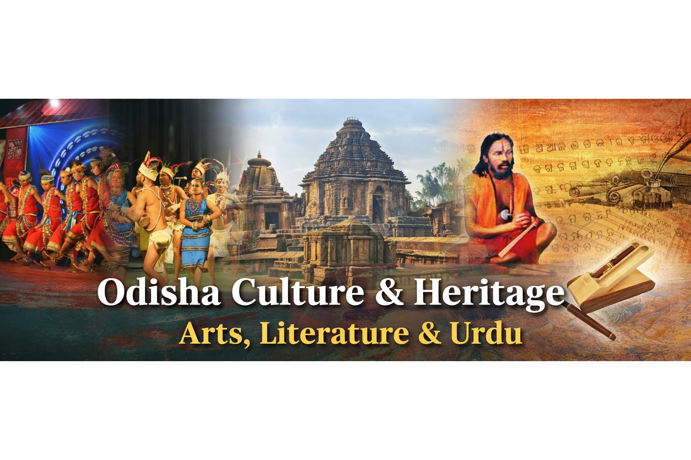

Odia Culture and Heritage: Preserving Traditions through Digital Platforms
Odia culture represents the rich traditions, language, art, and heritage of the state of Odisha. Rooted in ancient history, Odia culture reflects a harmonious blend of spirituality, creativity, and community life. From classical dance and folk art to literature and festivals, Odisha's cultural identity is unique and deeply respected across India.
With the growth of digital technology, promoting and preserving Odia culture through modern platforms has become essential. Digital platforms help make cultural knowledge accessible to people across the world while ensuring that traditions are documented for future generations.
Importance of Odia Culture in India
The Odia language and literary heritage
Classical dance and music traditions
Traditional art forms and handicrafts
Religious and cultural festivals
Historical monuments and temples
These elements together form a cultural identity that has been preserved for centuries.
Sahitya Akademi
Sahitya Akademi is India's national academy of letters, dedicated to the promotion and development of literature in various Indian languages. It works to preserve the country's rich literary heritage by supporting writers, poets, and scholars through publications, literary programs, conferences, and cultural initiatives.
The academy plays a vital role in encouraging multilingual literature and cultural exchange across regions. Through prestigious literary awards, research activities, and digital platforms, Sahitya Akademi helps make Indian literature accessible to readers and future generations while strengthening the nation's cultural identity.
Urdu Academy
Urdu Academy is a cultural institution dedicated to the promotion and preservation of the Urdu language, literature, and cultural heritage. It works towards encouraging literary activities, supporting poets and writers, and organizing seminars, workshops, and cultural programs related to Urdu language and traditions.
The academy plays an important role in strengthening linguistic diversity and nurturing literary creativity. Through publications, awards, and educational initiatives, it helps preserve the rich legacy of Urdu literature while making it accessible to modern audiences through digital platforms.
Lalit Kala Akademi
Lalit Kala Akademi is India's national academy of fine arts, established to promote visual arts such as painting, sculpture, graphic arts, and contemporary art forms. The academy encourages artistic excellence by organizing national exhibitions, art camps, and workshops for artists across the country.
It supports emerging and established artists by providing platforms for creative expression and cultural exchange. Lalit Kala Akademi also preserves important artworks and documents India's artistic heritage through research, archives, and digital exhibitions.
Sangeet Akademi
Sangeet Akademi is the national academy for music, dance, and drama in India. It is responsible for preserving and promoting classical and traditional performing arts, including Indian classical music and dance forms. The academy recognizes outstanding artists and contributes to cultural development through training programs, festivals, and research initiatives.
By supporting performers, scholars, and institutions, Sangeet Akademi ensures the continuity of India's rich performing arts traditions. Its efforts help connect cultural heritage with younger generations and promote Indian performing arts at national and international levels.
Future of Culture in Digital India
Digital platforms will play a key role in preserving and promoting India's cultural heritage for future generations.
Cultural institutions such as Urdu Academy, Sahitya Akademi, Sangeet Akademi, and Lalit Kala Akademi will use technology to reach wider audiences.
Online archives and digital libraries will preserve literature, music, and art in accessible formats.
Virtual exhibitions and online cultural events will make culture available beyond physical boundaries.
The future of culture depends on combining heritage with technology to engage youth and strengthen cultural awareness.
How Cultural Academies Inspire the Next Generation
Cultural academies such as Urdu Academy, Sahitya Akademi, Sangeet Akademi, and Lalit Kala Akademi do not only preserve heritage, but also inspire the younger generation to connect with their roots. Through workshops, competitions, exhibitions, and digital platforms, these institutions encourage students and young artists to explore literature, music, and fine arts.
In today's digital age, young people often discover culture through websites and online content. By providing information about programs, awards, and events in a simple and attractive way, cultural academy websites help students participate in cultural activities and develop creative skills.
This connection between tradition and youth ensures that cultural values are not lost but continue to grow with time. Digital platforms act as bridges between history and the future, making culture relevant for modern society.
Conclusion
Cultural academies such as Urdu Academy, Sahitya Akademi, Sangeet Akademi, and Lalit Kala Akademi play an essential role in preserving India's cultural heritage. Through digital platforms, these institutions make culture more accessible to students and artists. By combining tradition with technology, they ensure that cultural values continue to grow and inspire future generations.